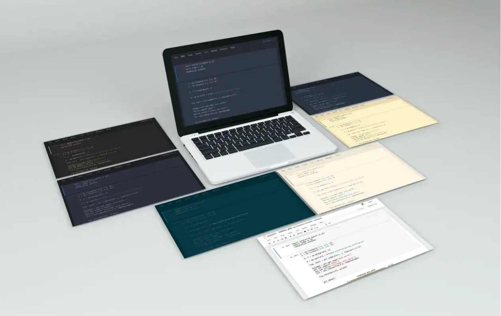

Misun (Mia) Song
Data Scientist
#Python #R #SQL #NoSQL #Tableau #MS Office #SAP BEx Analyzer #Machine Learning #Data Mining #Linear and Non-Linear Regression #Time Series #Online Commerce #Fashion #Business Strategy
Master of Science in Applied Data Science (2022 ~ 2023)
@the University of Chicago in Chicago, IL, USA
Analytics Intern(2022 Summer)
@Brackets in Seoul, South Korea
Sales and Operation Analyst in Online Commerce & Fashion (2014 ~ 2022)
@LG Fashion in Seoul, South Korea
Bachelor of Business Administration (2009 ~ 2014)
@Yonsei University in Seoul, South Korea

Welcome to my digital portfolio. I'm Misun (Mia) Song, a data science professional whose roots are steeped in the business world. My journey reflects the harmonious blend of business strategy and data analytics - two fields that may seem distinct, yet are profoundly intertwined in shaping the businesses of the future.
Starting as a Sales & Operations Analyst at LG Fashion, my curiosity about the data driving sustainable business decisions led me towards the captivating field of data science. To equip myself with the necessary skills, I pursued a Master's in Applied Data Science from The University of Chicago, where I mastered languages like Python, R, SQL, and tools such as Tableau and SAP BEx Analyzer. However, the most valuable lesson learned was how to integrate these data-driven insights with business strategies.
My analytics internship at Brackets provided an opportunity to put these lessons into practice. Through developing a Tableau dashboard simulation and presenting comprehensive business analyses, I influenced client decisions and growth strategies, blending my data science expertise and business acumen. This blend is also evident in my data science projects, notably, the overhaul of PowerKiosk's energy price prediction system. Such endeavors highlight my passion for utilizing data science to solve complex real-world problems.
In addition to these achievements, I've founded Pivot to Data Science, a platform aimed at assisting individuals transitioning into the field, reflecting my commitment to foster a supportive data science community.
In this portfolio, you'll witness the confluence of my skills, experiences, and dedication to data science. My journey stands as a testament to my ability to contribute to various data science initiatives, and I hope it serves as an inspiration to you.